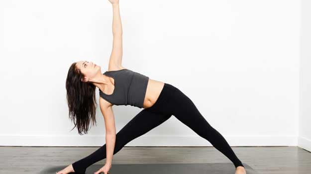

yogga poses

It stretches the legs and torso, mobilizes the hips and promotes deep breathing, leaving one with enlivening effects. Stand with your feet wide apart. Stretch your right foot out (90 degrees) while keeping the leg closer to the torso. Keep your feet pressed against the ground and balance your weight equally on both feet. Inhale and as you exhale bend your right arm and make it touch the ground while your left arm goes up. Keep your waist straight. Ensure that your body is bent sideways and not forward or backwards. Stretch as much as you can while taking long, deep breaths. Repeat on the other side.
trikoasana pose
NEXT